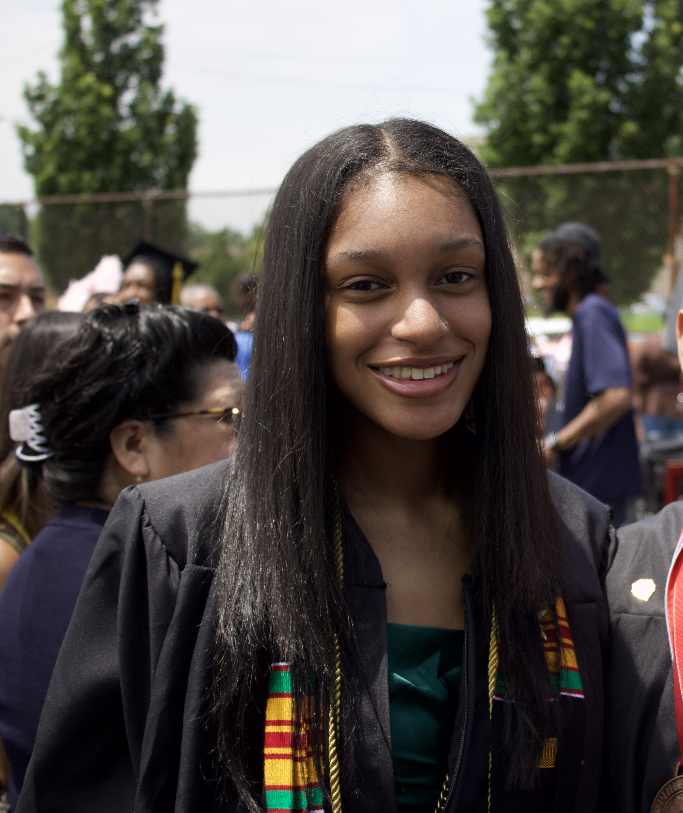
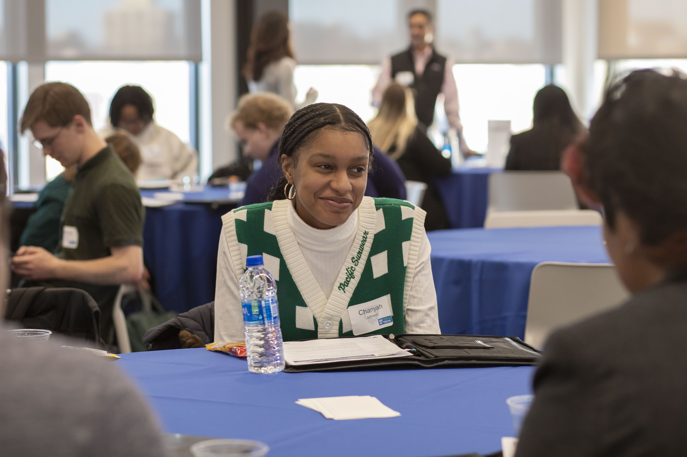

Welcome!
  Link to my ResumeHello! I am Chanyah Johnson and welcome to my page. I am a sophmore at Penn State's Main Campus majoring in Human-Centered Design and Development with a minor in Security and Risk Analysis. My major has equipped me with a wide range of technical, design, and teamwork skills. In past projects I have worked to create prototypes for apps in group projects as well as doing some front end and back-end work on applications as well. .
I am currently pursuing a career in Software Development. As of right now, I am working as a learning assistant in the College of IST. Currently in my job as a Learning Assistant for the Introduction to Application Development course in the College of IST, I spend a lot of time with the two other LAs as well as the course instructor figuring out ways to make the students' learning experience better. Solutions that I have personally come up with are making in class problems for the students to work on to better understand the material, as well as suggesting to the instructor ways that he may be able to make the students experience in the class better. That includes going over homework problems or even spending more time going over example problems. These suggestions have allowed me to be able to help the students in areas they were struggling as well as encouraged them to seek help in my office hours. The very little suggestions that I, or even the other LAs may come up with, helps to improve the overall learning of the course for the students which I am proud to share.
I am originally from Philadelphia, Pennsylvania. In my freetime, I like to watch TV, listen to music, and take part in fun activities. Some of my favorite shows include Glee, Greys Anatomy, and Big Bang Theory. My favorite music artists include Beyonce, Drake, and The Weeknd. Some of my favorite activities include bowling, Topgolf, and going to the arcade.
Click below for more info about me!
| Languages |
|
|---|---|
| Platforms |
|
About My Major
B.S. Human-Centered Design and Development, Minor in Security and Risk Analysis
Human-Centered Design and Development is the study of how to identify, design, build, and evaluate technologies to enhance people’s lives. The field focuses on understanding people and their use of technology, the methods and tools used for designing and building effective technology solutions, and the modern information technologies used to create effective solutions. The field involves working with potential users and customers to understand their needs and unique contexts, and then how to design, build, and evaluate impactful products and services. Human-centered design and development integrates ideas from design thinking, human-computer interaction (HCI), interaction design, and user experience design with the skills and techniques needed for software development.
About my Minor
Minor: Security and Risk Analysis
Security and risk analysis is a field that explores the integrated processes conducted to provide decision-makers with the information needed to understand factors that can negatively influence operations and outcomes, and make informed judgments concerning the extent of actions needed to reduce vulnerabilities, protect resources, and optimize investments. Security and risk analysis is a field of practice with two blended concentration areas:
- Security, which seeks to identify, understand, and analyze critical local, national and international security issues
- Risk, which includes risk assessment, risk characterization, risk communication, risk management, and the formulation of risk policy.
In practice, the issues and processes for conducting of security and risk analytics are neither separate nor sequential. To be effective, the issues of security and risk must be addressed concurrently and synergistically.
Work Experience
- Assisted professor and students in the classroom
- Held office hours to give students additional help outside the classroom
- Taught Java to Philadelphia High School Students during a six-week summer course to prepared Students for the AP CS Exam
Student Organizations and Clubs
- Connect with other scholarship recipients in the College of IST
- Learn how to successfully prepare for our professional career
- Connect with underrepresented students across all fields of engineering to network and develop our professional careers
- Connect with underrepresented students in the College of IST